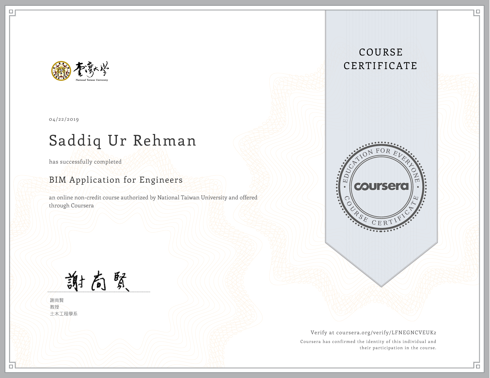
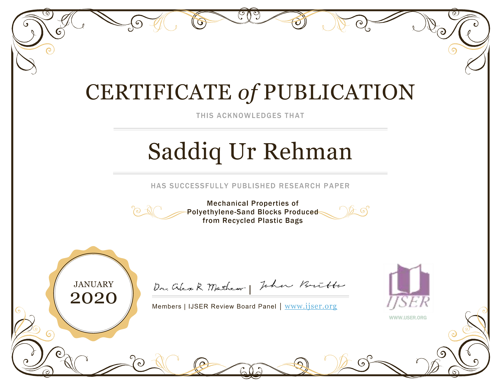
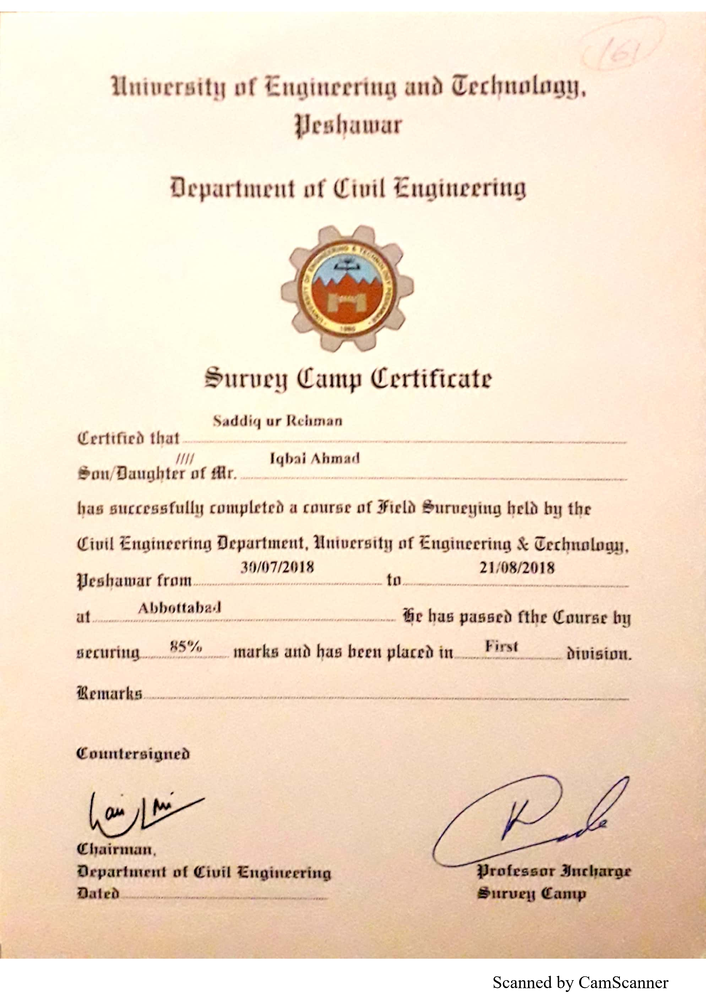
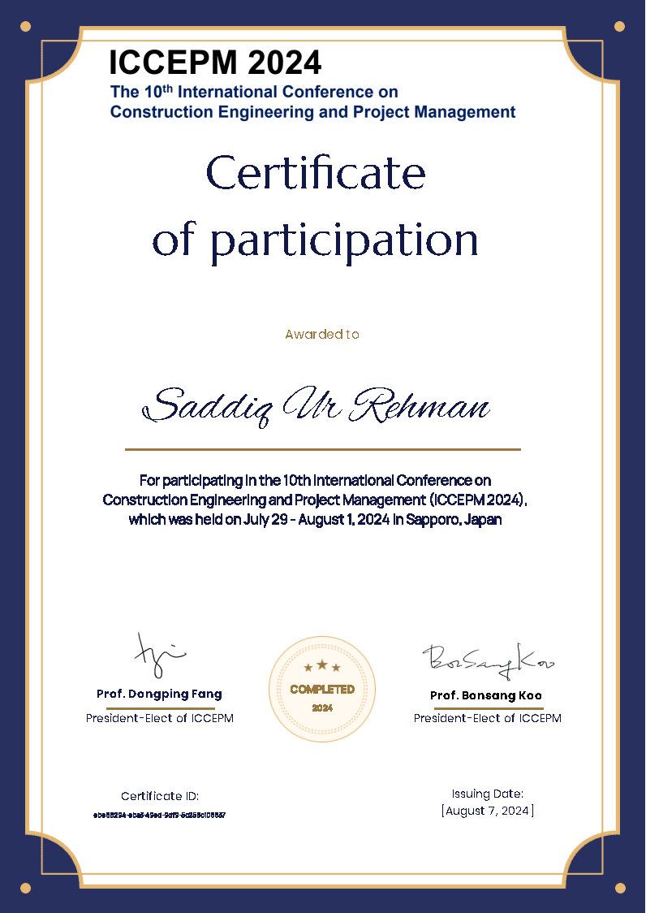
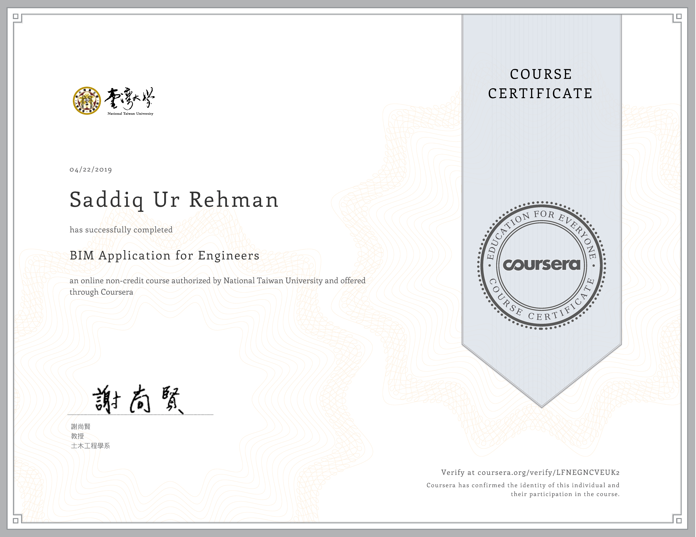
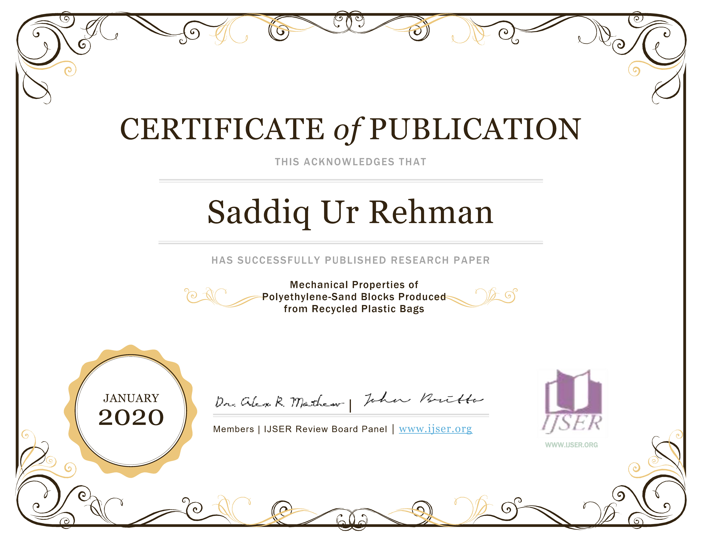
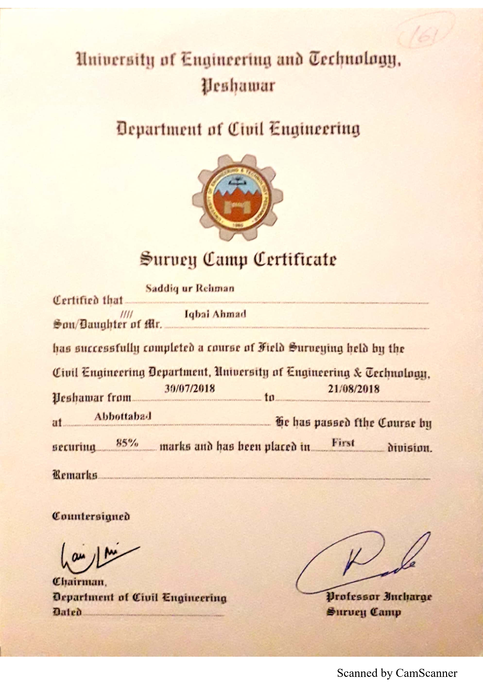
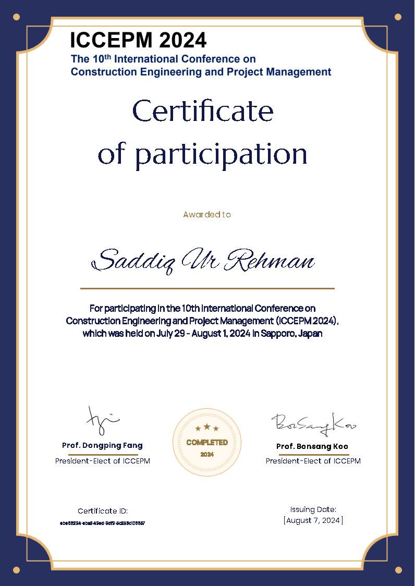

Saddiq Ur Rehman
PhD Student | Department of Architecture | Kyung Hee University
Email: saddiqurrehman@khu.ac.kr
Email: saddiq.r.97@gmail.com


About Me
Saddiq Ur Rehman is a graduate researcher at ITA LAB in the Department of Architecture at Kyung Hee University, South Korea. He earned his Bachelor degree in Civil Engineering from the University of Engineering and Technology Peshawar. However, driven by a keen interest in the application of Building Information Modeling (BIM) in architecture and design, he transitioned to the field of architecture.
His research focuses on the integration of various cutting-edge technologies, including BIM, Design for Manufacture and Assembly (DfMA), Modular construction, Design recommendation system, Machine Learning, and Virtual Twin technologies.
Research Interests
- Building Information Modeling (BIM)
- Design for Manufacturing and Assembly (DfMA)
- Virtual Design and Construction (VDC)
- Natural Language Processing
- BIM and Game Engine Integration
- Simulation and Optimization
- Extended Reality
- MultiModal
Education

Kyung Hee University, Global Campus, Korea
Department: Architecture
Course: PhD in Architecture
Thesis: ....................
Date: March, 2021 - Present
Grade: 4.15/4.3

University of Engineering and Technology, Peshawar
Department: Civil Engineering
Course: B.Sc. in Civil Engineering
Thesis: Experimental Determination of Capacity of Pile Group and Pile Raft Foundation
Date: Sept. 2015- Sept. 2019
Grade: 3.39/4.0
Academic Experience
Research Assistant (RA): Department of Architecture, Kyung Hee University.
- Since March, 2021 - Present
- Task: Research on BIM and Modular construction integration with industry 4.0.
Teaching Assistant (TA): Department of Architecture, Kyung Hee University.
- March, 2023 - June, 2023
- Course: BIM and IPD
Industry Experience
Junior Planning Engineer, Value Engineering Pakistan
- August, 2019 - Feb, 2021
- Task: Bid estimation for US-based Construction Projects
Publications
International Journals
- Inhan Kim, Jihye Shin, Syed Haseeb Shah, & Saddiq Ur Rehman (2024). Client-centered detached modular housing: Natural language processing-enabled design recommender system. Journal of Computational Design and Engineering, 11(3), 137-157. (SCIE, Q1, IF: 4.8) https://doi.org/10.1093/jcde/qwae041
- Saddiq Ur Rehman, Inhan Kim, & Jungsik Choi (2023). Data-driven integration framework for four-dimensional building information modeling simulation in modular construction: a case study approach. Journal of Computational Design and Engineering, 10(6), 2288-2311. (SCIE, Q1, IF: 4.8) https://doi.org/10.1093/jcde/qwad100
- Ali, M., Iqbal, N., & Saddiq Ur Rehman (2020). Mechanical properties of polyethylene-sand blocks produced from recycled plastic bags. International Journal of Scientific and Engineering Research, 11, 1278-1283. (IF: 1.1) Click to Download
International Conferences
- Saddiq Ur Rehman and Inhan Kim (2024). Shape Grammar-Driven BIM Model Database for a Modular Building Design Recommender System. The 10th International Conference on Construction Engineering and Project Management. Jul. 29-Aug.1, 2024, Sapporo.
- Saddiq Ur Rehman, Soyeong Ryu, & Inhan Kim (2022, August). An Analysis and Consolidation of DfMA Based Construction Guidelines and Its Validation Through a Korean Case Study. In International Conference on Geometry and Graphics (pp. 749-759). Cham: Springer International Publishing. Access to Paper
- Saddiq Ur Rehman, Sejin Lee, Jungsik Choi, & Inhan Kim (2021). Analysis of development of open BIM-based automated rule checking system in KBIM project. 13th Asian forum on graphic science 19 (122-132). Download paper
- Murad Ali, Naveed Iqbal, Saddiq Ur Rehman, Muhammad Anwar, Mohammad Adil (2019). EXPERIMENTAL DETERMINATION OF ROTATIONAL STIFFNESS OF PARTIAL FIXITY JOINTS IN POST TENSIONED PRE-CAST STRUCTURE. 5th International Multidisciplinary Research Conference 2019 “Global Prosperity through Research & Sustainable Development” October 29-31, 2019
- Saddiq Ur Rehman, Zeeshan Altaf, Muhammad Adil, Noorul Hadi (2019) 4D BIM modeling of Insulated Concrete Sandwich Panel Building. 1st Conference on Sustainability in Civil Engineering, August 01, 2019, Capital University of Science and Technology, Islamabad, Pakistan
- Irfan jamil, Muhammad mahmood Ul Hassan, Saddiq Ur Rehman, Muhammad Shoaib Khan, Shahid ali Khan, Zeeshan Altaf (2019). Experimental Determination of Capacity of Pile Group and Pile Raft Foundation. 1st Conference on Sustainability in Civil Engineering, August 01, 2019, Capital University of Science and Technology, Islamabad, Pakistan
- Irfan jamil, Zeeshan Altaf, Saddiq Ur Rehman, Muhammad Hamza Arshad, Muhammad Shoaib Khan, Shahid Ali Khan, Noorul Hadi (2019). Experimental Study of Comparison of Settlement Behavior of Pile Raft Foundation with Batter and Vertical Piles. 1st Conference on Sustainability in Civil Engineering, August 01, 2019, Capital University of Science and Technology, Islamabad, Pakistan
- Shahid Ali Kha, Saddiq Ur Rehman, Muhammad Shoaib Khan, Muhammad Adil (2019). BIM Implementation of Reinforced Concrete Sandwich Panels. 2nd Pak-Turk International Conference on “Emerging Technologies in the field of Sciences and Engineering
- Faisal Rehman, Shahid Ali khan, Saddiq Ur Rehman, Muhammad Asim Aman (2019) Finite Element Analysis of Brick Masonry. 2nd Pak-Turk International Conference on “Emerging Technologies in the field of Sciences and Engineering
- Hizbullah Khan, Muhammad Shoaib Khan, Mohammad Adil, Bazid Khan, Saddiq Ur Rehman, Shahid Ali Khan (2019). Geotechnical Sub soil Profiling Using Geographic Information System. International Disaster Management Conference "IDMC-2019.
Korean Domestic Conferences
- Saddiq Ur Rehman, Inhan Kim (2024) A tentative framework for discrete event simulation of modular building production using game engines. Korean CDE Society 2024 Winter Conference. Vol. 19 (S19-1). 201-203
- Saddiq Ur Rehman, Inhan Kim (2023) Digital Twins in Manufacturing Sector and Their Promising Applications in the Modular Construction Industry. Summer Conference of Society for Computational Design and Engineering 2023. Vol 11. (S1-52) 83-85
- Syed Haseeb Shah, Saddiq Ur Rehman, Inhan Kim (2023). Office building design recommendations systems tailored to client needs. Korean Institute of Information and Communication Facilities Academic Conference. 230-232
- Saddiq Ur Rehman, Inhan Kim (2023) LDA-based topic modelling of client’s needs for residential building design. Korea CDE Society 2023 Winter Conference. Vol 2. (S2-2). 13-15 (Best Paper Award)
- Saddiq Ur Rehman, Inhan Kim, Hyung soo Kim (2022) Proposition Of Tentative Framework For The Development Of DfMA-Oriented Construction Policies Regular/National University Student Academic Presentation Contest . 4(O-33)
- Saddiq Ur Rehman, Inhan Kim, Junghyun Kim, Sangsu Lee (2022) BIM-based visualization of downstream activities in DfMA-oriented modern methods of construction. Korean Institute of Information and Communication Facilities Academic Conference (4-7).
- Jina Park, Saddiq Ur Rehman, Eugene Jeong, Inhan Kim (2022) Proposal of 3D printing production manual for DfMA-based building prototypes. Korean CDE Society 2022 Summer Conference 3 (S3-4), 45-47
- Saddiq Ur Rehman, Soyeong Ryu, Sangsu Lee, Inhan Kim (2022) General Overview of DfMA implementation in Korean Construction Industry Korean CDE Society 2022 Winter Conference 15 (S15-1), 147-148 (Best Paper Award)
- Saddiq Ur Rehman, Inhan Kim, Jungsik Choi (2021). Machine Learning Based Checking of attributes of exterior exposure in external walls. Korea CDE Society 2021 Summer Conference.
BIM Magazine
- Inhan Kim, Saddiq Ur Rehman (2023). Client-Enabled Office Modular Design: Embracing Data-Driven Recommendations. The BIM 27 (buildingSMART Korea). Vol 27, pages (51-56).
Achievements & Activities
Scholarships
Presidential Scholarship at Kyung Hee University, Korea (2021-2024)
Membership
Korean Society for Computational Design and Engineering
Reviewer
1) Journal of Asian Architecture and Building Engineering
2) Journal of Civil Engineering and Management


 






